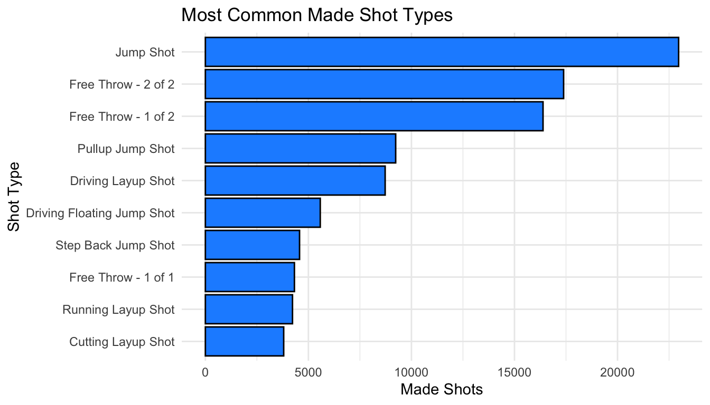
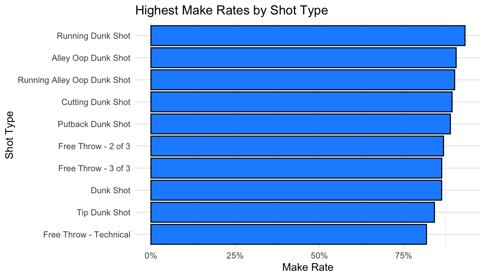
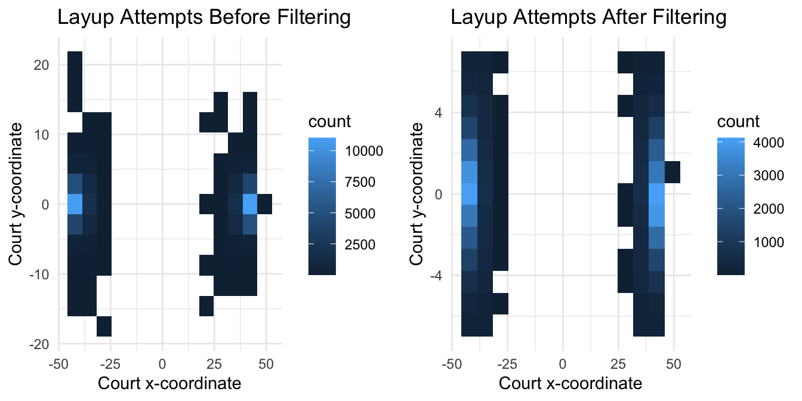
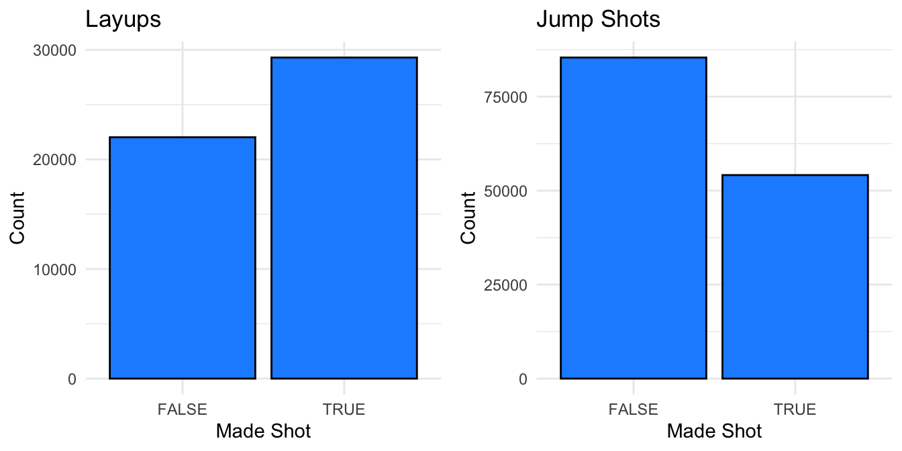
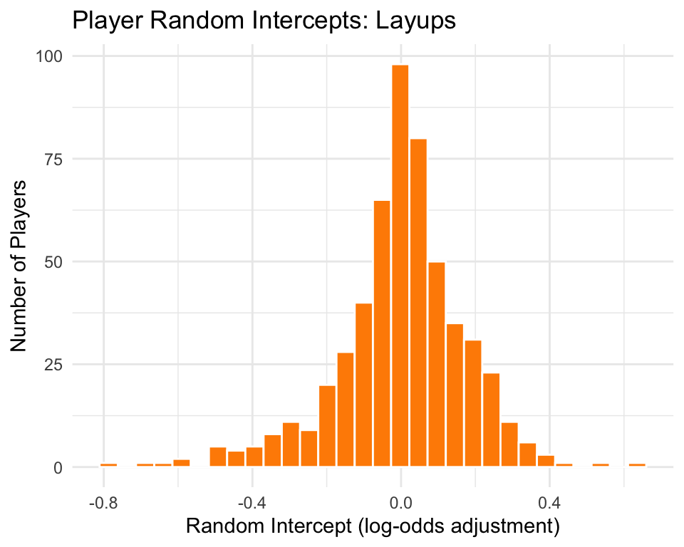
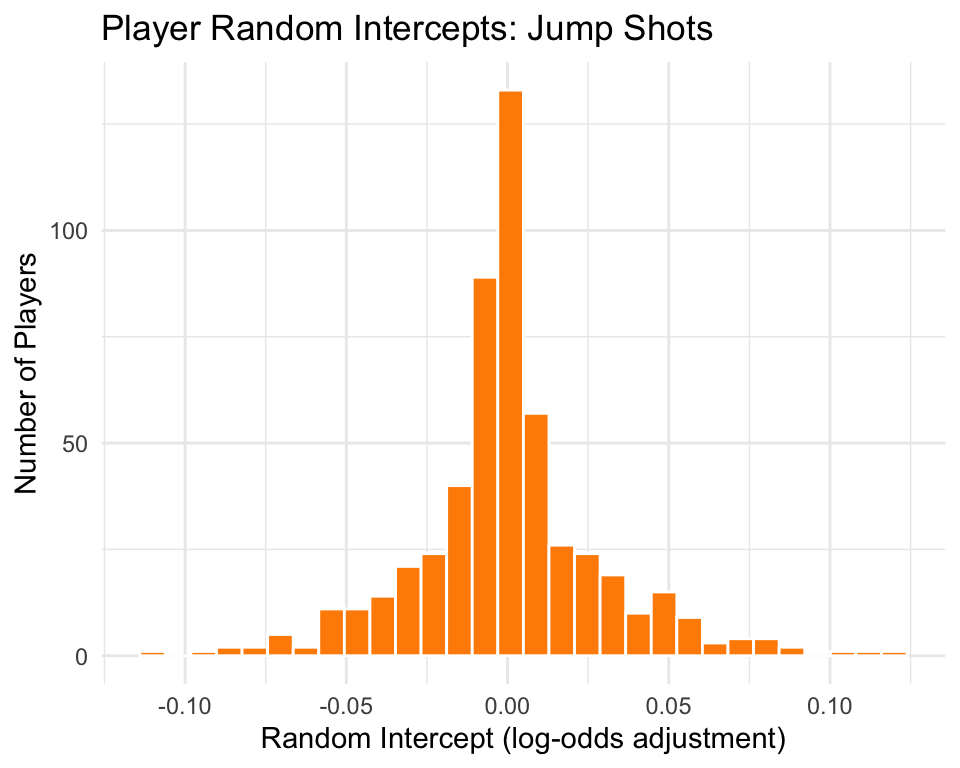

Code
knitr::opts_chunk$set(
echo = TRUE,
warning = FALSE,
message = FALSE,
cache = TRUE
)
library(hoopR)
library(tidyverse)
library(gridExtra)
library(knitr)
library(lme4)
library(scales)knitr::opts_chunk$set(
echo = TRUE,
warning = FALSE,
message = FALSE,
cache = TRUE
)
library(hoopR)
library(tidyverse)
library(gridExtra)
library(knitr)
library(lme4)
library(scales)This project analyzes NBA shot success during the 2024–2025 season using play-by-play and player box-score data from the hoopR package. The analysis begins by identifying common made-shot types and comparing make rates across shot categories, then focuses on layups and jump shots as two high-volume shot groups.
The main modeling goal is to evaluate which player-level and game-context variables are associated with made-shot probability. I compare standard logistic regression models with mixed-effects logistic regression models that include player-level random intercepts to account for repeated shots by the same players.
Shot selection is one of the most important parts of offensive efficiency in basketball. Different shot types have different levels of difficulty, and player ability, shot distance, time remaining, and game context may all influence whether a shot is made.
This project focuses on two common NBA shot categories: layups and jump shots. Using 2024–2025 NBA play-by-play data, I analyze which variables are associated with shot success and whether accounting for player-level differences improves model fit.
The main questions are:
The analysis uses NBA play-by-play data from the ‘hoopR’ package for the season labeled 2025, corresponding to the 2024–2025 NBA season, including regular season and postseason games. Each row represents an in-game event, including shot attempts, fouls, substitutions, rebounds, and other play-by-play actions.
Because this project focuses on shot success, I filtered the data to shooting plays only. I then created two broad shot categories based on the play description:
type_text contains "Layup"type_text contains "Jump Shot"Player box-score data was joined to the shot-level data using game and player identifiers. This added player-level information such as field-goal percentage, three-point percentage, points scored, and starter status.
# 2025 refers to the 2024--2025 NBA season in hoopR data conventions.
nba_season <- 2025
nba_pbp <- hoopR::load_nba_pbp(seasons = nba_season)
nba_pbp_shooting <- nba_pbp %>%
filter(shooting_play == TRUE)
shooting_layup_raw <- nba_pbp_shooting %>%
filter(str_detect(type_text, regex("Layup", ignore_case = TRUE)))
shooting_jumpshot <- nba_pbp_shooting %>%
filter(str_detect(type_text, regex("Jump Shot", ignore_case = TRUE)))
# Verify season coverage
nba_pbp %>%
summarize(
seasons_loaded = paste(sort(unique(season)), collapse = ", "),
first_game_date = min(game_date, na.rm = TRUE),
last_game_date = max(game_date, na.rm = TRUE),
total_plays = n(),
total_games = n_distinct(game_id)
)# A tibble: 1 × 5
seasons_loaded first_game_date last_game_date total_plays total_games
<chr> <date> <date> <int> <int>
1 2025 2024-10-22 2025-06-22 571603 1209The first chart shows the most common shot types among made baskets. This does not measure efficiency directly; instead, it identifies high-volume scoring outcomes. A shot type can appear often because it is attempted frequently, not necessarily because it has the highest success rate.
made_shot_counts <- nba_pbp_shooting %>%
filter(scoring_play == TRUE) %>%
count(type_text, sort = TRUE) %>%
slice_head(n = 10)
made_shot_counts %>%
ggplot(aes(x = reorder(type_text, n), y = n)) +
geom_col(color = "black", fill = "dodgerblue") +
coord_flip() +
theme_minimal() +
labs(
title = "Most Common Made Shot Types",
x = "Shot Type",
y = "Made Shots"
)
Made-shot count captures scoring volume. To compare efficiency, I calculated make rate as made shots divided by total attempts for each shot type. I filtered to shot types with at least 500 attempts to reduce small-sample noise.
shot_efficiency <- nba_pbp_shooting %>%
group_by(type_text) %>%
summarize(
attempts = n(),
makes = sum(scoring_play == TRUE, na.rm = TRUE),
make_rate = makes / attempts,
.groups = "drop"
) %>%
filter(attempts >= 500) %>%
arrange(desc(make_rate))
shot_efficiency %>%
slice_head(n = 10) %>%
ggplot(aes(x = reorder(type_text, make_rate), y = make_rate)) +
geom_col(color = "black", fill = "dodgerblue") +
coord_flip() +
theme_minimal() +
scale_y_continuous(labels = percent_format()) +
labs(
title = "Highest Make Rates by Shot Type",
x = "Shot Type",
y = "Make Rate"
)
Some plays labeled as layups appeared far from the basket based on their coordinate values. To reduce likely misclassified or unusual layup records, I filtered layup attempts to retain shots located near the basket area in the coordinate system used by the play-by-play data. In this coordinate system, near-basket layups appear near the far left and right ends of the x-axis, so the filter keeps attempts with large absolute x-coordinate values and small y-coordinate values.
h1 <- ggplot(shooting_layup_raw, aes(x = coordinate_x, y = coordinate_y)) +
geom_bin2d(bins = 14) +
theme_minimal() +
labs(
x = "Court x-coordinate",
y = "Court y-coordinate",
title = "Layup Attempts Before Filtering"
)
shooting_layup <- shooting_layup_raw %>%
filter(abs(coordinate_x) > 30, abs(coordinate_y) < 7.5)
h2 <- ggplot(shooting_layup, aes(x = coordinate_x, y = coordinate_y)) +
geom_bin2d(bins = 14) +
theme_minimal() +
labs(
x = "Court x-coordinate",
y = "Court y-coordinate",
title = "Layup Attempts After Filtering"
)
grid.arrange(h1, h2, ncol = 2)
The modeling outcome is whether a shot was made (scoring_play = TRUE) or missed (scoring_play = FALSE). The chart below shows the make/miss distribution for the layup and jump-shot datasets.
d1 <- shooting_layup %>%
ggplot(aes(x = scoring_play)) +
geom_bar(color = "black", fill = "dodgerblue") +
theme_minimal() +
labs(
title = "Layups",
x = "Made Shot",
y = "Count"
)
d2 <- shooting_jumpshot %>%
ggplot(aes(x = scoring_play)) +
geom_bar(color = "black", fill = "dodgerblue") +
theme_minimal() +
labs(
title = "Jump Shots",
x = "Made Shot",
y = "Count"
)
grid.arrange(d1, d2, ncol = 2)
The outcome variable for both models is scoring_play, a binary indicator of whether the shot was made. Because the same players take many shots, observations are not fully independent. To account for repeated shots by the same players, I use mixed-effects logistic regression models with player-level random intercepts.
For each shot type, I compare:
AIC is used to compare relative model fit. Lower AIC indicates a better balance between model fit and model complexity. AIC is useful for comparing models fit to the same outcome and data, but it is not a substitute for out-of-sample validation.
box_scores <- hoopR::load_nba_player_box(nba_season)
box_required_cols <- c(
"game_id",
"athlete_id",
"field_goals_made",
"field_goals_attempted",
"three_point_field_goals_made",
"three_point_field_goals_attempted",
"points",
"starter"
)
stopifnot(all(box_required_cols %in% names(box_scores)))
box_score_small <- box_scores %>%
select(
game_id,
athlete_id,
minutes,
field_goals_made,
field_goals_attempted,
three_point_field_goals_made,
three_point_field_goals_attempted,
points,
plus_minus,
starter
)
layup_model_data <- shooting_layup %>%
left_join(
box_score_small,
by = c("game_id" = "game_id", "athlete_id_1" = "athlete_id")
) %>%
mutate(
shooting_distance = sqrt(coordinate_x^2 + coordinate_y^2),
field_goal_pct = if_else(field_goals_attempted > 0, field_goals_made / field_goals_attempted, NA_real_),
three_point_pct = if_else(three_point_field_goals_attempted > 0, three_point_field_goals_made / three_point_field_goals_attempted, NA_real_)
) %>%
drop_na(
scoring_play,
shooting_distance,
start_quarter_seconds_remaining,
starter,
field_goal_pct,
points,
period_number,
athlete_id_1
)
jumpshot_model_data <- shooting_jumpshot %>%
left_join(
box_score_small,
by = c("game_id" = "game_id", "athlete_id_1" = "athlete_id")
) %>%
mutate(
shooting_distance = sqrt(coordinate_x^2 + coordinate_y^2),
field_goal_pct = if_else(field_goals_attempted > 0, field_goals_made / field_goals_attempted, NA_real_),
three_point_pct = if_else(three_point_field_goals_attempted > 0, three_point_field_goals_made / three_point_field_goals_attempted, NA_real_)
) %>%
drop_na(
scoring_play,
shooting_distance,
start_quarter_seconds_remaining,
starter,
field_goal_pct,
three_point_pct,
points,
period_number,
athlete_id_1
)create_fixed_effect_table <- function(model) {
summary(model)$coefficients %>%
as.data.frame() %>%
rownames_to_column("Term") %>%
rename(
Estimate = Estimate,
Std.Error = `Std. Error`,
Z.value = `z value`,
P.value = `Pr(>|z|)`
) %>%
mutate(
CI.lower = Estimate - 1.96 * Std.Error,
CI.upper = Estimate + 1.96 * Std.Error,
Odds_Ratio = exp(Estimate),
OR_CI_lower = exp(CI.lower),
OR_CI_upper = exp(CI.upper)
)
}The layup model uses shooting distance, time remaining in the quarter, starter status, field-goal percentage, points scored, and period number as fixed effects. The mixed-effects model adds a player-level random intercept.
layup_model_mixed <- glmer(
scoring_play ~ scale(shooting_distance) + scale(start_quarter_seconds_remaining) +
starter + scale(field_goal_pct) + scale(points) + factor(period_number) +
(1 | athlete_id_1),
data = layup_model_data,
family = binomial,
control = glmerControl(optimizer = "bobyqa")
)
layup_model_plain <- glm(
scoring_play ~ scale(shooting_distance) + scale(start_quarter_seconds_remaining) +
starter + scale(field_goal_pct) + scale(points) + factor(period_number),
data = layup_model_data,
family = binomial
)kable(
AIC(layup_model_mixed, layup_model_plain),
caption = "AIC comparison between the layup mixed-effects logistic regression model and standard logistic regression model"
)| df | AIC | |
|---|---|---|
| layup_model_mixed | 12 | 61943.08 |
| layup_model_plain | 11 | 62177.46 |
The mixed-effects model has lower AIC than the standard logistic regression model, suggesting that accounting for player-level baseline shooting ability improves relative model fit for layups.
layup_fe_table <- create_fixed_effect_table(layup_model_mixed)
kable(
layup_fe_table,
digits = 3,
col.names = c(
"Term", "Estimate", "Std. Error", "Z value", "P value",
"CI lower", "CI upper", "Odds Ratio", "OR CI lower", "OR CI upper"
),
caption = "Fixed-effect estimates and odds ratios for the layup mixed-effects model"
)| Term | Estimate | Std. Error | Z value | P value | CI lower | CI upper | Odds Ratio | OR CI lower | OR CI upper |
|---|---|---|---|---|---|---|---|---|---|
| (Intercept) | 0.263 | 0.031 | 8.376 | 0.000 | 0.201 | 0.325 | 1.301 | 1.223 | 1.383 |
| scale(shooting_distance) | 0.422 | 0.010 | 41.349 | 0.000 | 0.402 | 0.442 | 1.525 | 1.495 | 1.556 |
| scale(start_quarter_seconds_remaining) | -0.041 | 0.010 | -4.128 | 0.000 | -0.061 | -0.022 | 0.960 | 0.941 | 0.979 |
| starterTRUE | 0.074 | 0.030 | 2.505 | 0.012 | 0.016 | 0.132 | 1.077 | 1.016 | 1.141 |
| scale(field_goal_pct) | 0.866 | 0.015 | 59.295 | 0.000 | 0.838 | 0.895 | 2.378 | 2.311 | 2.447 |
| scale(points) | -0.084 | 0.016 | -5.358 | 0.000 | -0.115 | -0.053 | 0.919 | 0.891 | 0.948 |
| factor(period_number)2 | 0.015 | 0.028 | 0.556 | 0.578 | -0.039 | 0.069 | 1.015 | 0.962 | 1.072 |
| factor(period_number)3 | 0.006 | 0.028 | 0.227 | 0.820 | -0.048 | 0.060 | 1.006 | 0.953 | 1.062 |
| factor(period_number)4 | 0.002 | 0.028 | 0.088 | 0.930 | -0.053 | 0.058 | 1.002 | 0.949 | 1.059 |
| factor(period_number)5 | -0.150 | 0.137 | -1.093 | 0.274 | -0.419 | 0.119 | 0.861 | 0.658 | 1.126 |
| factor(period_number)6 | 0.010 | 0.704 | 0.014 | 0.989 | -1.369 | 1.390 | 1.010 | 0.254 | 4.014 |
The fixed-effect estimates show which variables are associated with layup success after accounting for player-level baseline differences. Odds ratios above 1 indicate higher odds of a made layup, while odds ratios below 1 indicate lower odds.
Shooting distance has a positive association with layup success in the filtered near-basket layup sample. This result should be interpreted carefully. It may reflect the coordinate system, the filtering rule, player selection effects, or differences in how layup attempts are recorded. Because this is observational play-by-play data, the coefficient should be interpreted as an association rather than evidence that longer layups are inherently easier.
Field-goal percentage is also positively associated with layup success, which is consistent with the idea that more efficient players are more likely to convert shot attempts. Period indicators are less consistent, suggesting that quarter number alone is not the main driver of layup success after accounting for player and context variables.
layup_random_effects <- ranef(layup_model_mixed)$athlete_id_1 %>%
as.data.frame() %>%
rownames_to_column("athlete_id_1") %>%
rename(Random_Intercept = `(Intercept)`)
layup_random_effects %>%
ggplot(aes(x = Random_Intercept)) +
geom_histogram(bins = 30, fill = "darkorange", color = "white") +
theme_minimal() +
labs(
title = "Player Random Intercepts: Layups",
x = "Random Intercept (log-odds adjustment)",
y = "Number of Players"
)
The random-intercept distribution shows that player-level differences remain even after accounting for shooting distance, timing, starter status, field-goal percentage, points, and period number. This supports the use of a mixed-effects model rather than treating every shot attempt as fully independent.
The jump-shot model uses shooting distance, time remaining in the quarter, starter status, field-goal percentage, three-point percentage, points scored, and period number as fixed effects. The mixed-effects model adds a player-level random intercept.
jumpshot_model_mixed <- glmer(
scoring_play ~ scale(shooting_distance) + scale(start_quarter_seconds_remaining) +
starter + scale(field_goal_pct) + scale(three_point_pct) +
scale(points) + factor(period_number) +
(1 | athlete_id_1),
data = jumpshot_model_data,
family = binomial,
control = glmerControl(optimizer = "bobyqa")
)
jumpshot_model_plain <- glm(
scoring_play ~ scale(shooting_distance) + scale(start_quarter_seconds_remaining) +
starter + scale(field_goal_pct) + scale(three_point_pct) +
scale(points) + factor(period_number),
data = jumpshot_model_data,
family = binomial
)kable(
AIC(jumpshot_model_mixed, jumpshot_model_plain),
caption = "AIC comparison between the jump-shot mixed-effects logistic regression model and standard logistic regression model"
)| df | AIC | |
|---|---|---|
| jumpshot_model_mixed | 13 | 164446.0 |
| jumpshot_model_plain | 12 | 164470.4 |
The mixed-effects model has lower AIC than the standard logistic regression model, suggesting that accounting for player-level baseline shooting ability improves relative model fit for jump shots.
jumpshot_fe_table <- create_fixed_effect_table(jumpshot_model_mixed)
kable(
jumpshot_fe_table,
digits = 3,
col.names = c(
"Term", "Estimate", "Std. Error", "Z value", "P value",
"CI lower", "CI upper", "Odds Ratio", "OR CI lower", "OR CI upper"
),
caption = "Fixed-effect estimates and odds ratios for the jump-shot mixed-effects model"
)| Term | Estimate | Std. Error | Z value | P value | CI lower | CI upper | Odds Ratio | OR CI lower | OR CI upper |
|---|---|---|---|---|---|---|---|---|---|
| (Intercept) | -0.475 | 0.017 | -27.633 | 0.000 | -0.509 | -0.442 | 0.622 | 0.601 | 0.643 |
| scale(shooting_distance) | 0.110 | 0.006 | 18.106 | 0.000 | 0.098 | 0.122 | 1.117 | 1.103 | 1.130 |
| scale(start_quarter_seconds_remaining) | 0.055 | 0.006 | 8.986 | 0.000 | 0.043 | 0.067 | 1.056 | 1.044 | 1.069 |
| starterTRUE | -0.020 | 0.016 | -1.197 | 0.231 | -0.052 | 0.012 | 0.981 | 0.950 | 1.013 |
| scale(field_goal_pct) | 0.513 | 0.009 | 56.477 | 0.000 | 0.495 | 0.531 | 1.670 | 1.641 | 1.700 |
| scale(three_point_pct) | 0.353 | 0.008 | 46.621 | 0.000 | 0.338 | 0.368 | 1.424 | 1.403 | 1.445 |
| scale(points) | 0.050 | 0.009 | 5.799 | 0.000 | 0.033 | 0.067 | 1.051 | 1.033 | 1.069 |
| factor(period_number)2 | -0.054 | 0.017 | -3.256 | 0.001 | -0.087 | -0.022 | 0.947 | 0.917 | 0.979 |
| factor(period_number)3 | -0.020 | 0.017 | -1.204 | 0.229 | -0.052 | 0.013 | 0.980 | 0.949 | 1.013 |
| factor(period_number)4 | -0.103 | 0.017 | -6.017 | 0.000 | -0.136 | -0.069 | 0.902 | 0.873 | 0.933 |
| factor(period_number)5 | -0.203 | 0.085 | -2.381 | 0.017 | -0.370 | -0.036 | 0.816 | 0.691 | 0.965 |
| factor(period_number)6 | 0.157 | 0.389 | 0.404 | 0.686 | -0.606 | 0.920 | 1.170 | 0.546 | 2.509 |
Several variables are associated with jump-shot success. Player efficiency metrics, including field-goal percentage and three-point percentage, are expected to be important because they capture shooting ability. Game-context variables such as shooting distance, time remaining in the quarter, and period number help describe the quality and context of shot attempts.
As with the layup model, these estimates should be interpreted as associations rather than causal effects. For example, a positive coefficient for shooting distance does not necessarily mean that longer shots are easier. It may reflect shot selection, openness, player skill, or other unobserved factors that are not included in the model.
jumpshot_random_effects <- ranef(jumpshot_model_mixed)$athlete_id_1 %>%
as.data.frame() %>%
rownames_to_column("athlete_id_1") %>%
rename(Random_Intercept = `(Intercept)`)
jumpshot_random_effects %>%
ggplot(aes(x = Random_Intercept)) +
geom_histogram(bins = 30, fill = "darkorange", color = "white") +
theme_minimal() +
labs(
title = "Player Random Intercepts: Jump Shots",
x = "Random Intercept (log-odds adjustment)",
y = "Number of Players"
)
The random-intercept distribution shows that individual players differ in baseline jump-shot success even after accounting for observable predictors. This supports the modeling choice to include player-level random effects.
The mixed-effects models had lower AIC values than the corresponding standard logistic regression models for both layups and jump shots. This suggests that accounting for player-level baseline shooting ability improves model fit.
The exploratory analysis also shows why it is important to distinguish between made-shot frequency and make rate. Made-shot frequency captures scoring volume, while make rate provides a simple measure of shot-conversion efficiency. Both are useful, but they answer different questions. This project uses made-shot frequency to identify common scoring outcomes, make rate to compare shot-type efficiency, and logistic mixed-effects modeling to study make probability for layups and jump shots.
For both shot categories, player efficiency metrics and game-context variables were associated with shot success. The player-level random intercepts suggest that individual shooting ability remains relevant even after controlling for observable shot and context variables.
These results should be interpreted as associations, not causal effects. The analysis does not prove that changing one predictor would directly cause shot success to increase or decrease. Instead, it identifies patterns in observed NBA play-by-play and box-score data.
Future versions of this project could:
This project shows that NBA shot success is shaped by both player-level ability and game-context factors. Mixed-effects logistic regression improved relative model fit for both layups and jump shots, supporting the idea that repeated shots by the same players should not be treated as fully independent. The analysis also highlights the importance of distinguishing between scoring volume and efficiency when evaluating shot types.
For a basketball operations or analytics setting, this type of model could be extended with tracking data, defender information, shot-clock context, and multi-season data to better evaluate shot quality and player decision-making.
The analysis was rendered using the following R session information.
R version 4.4.2 (2024-10-31)
Platform: aarch64-apple-darwin20
Running under: macOS Sequoia 15.3
Matrix products: default
BLAS: /Library/Frameworks/R.framework/Versions/4.4-arm64/Resources/lib/libRblas.0.dylib
LAPACK: /Library/Frameworks/R.framework/Versions/4.4-arm64/Resources/lib/libRlapack.dylib; LAPACK version 3.12.0
locale:
[1] en_US.UTF-8/en_US.UTF-8/en_US.UTF-8/C/en_US.UTF-8/en_US.UTF-8
time zone: America/Los_Angeles
tzcode source: internal
attached base packages:
[1] stats graphics grDevices utils datasets methods base
other attached packages:
[1] scales_1.4.0 lme4_1.1-36 Matrix_1.7-2 knitr_1.49
[5] gridExtra_2.3 lubridate_1.9.4 forcats_1.0.0 stringr_1.5.1
[9] dplyr_1.1.4 purrr_1.1.0 readr_2.1.5 tidyr_1.3.1
[13] tibble_3.2.1 ggplot2_4.0.0 tidyverse_2.0.0 hoopR_2.1.0
loaded via a namespace (and not attached):
[1] gtable_0.3.6 xfun_0.53 htmlwidgets_1.6.4
[4] lattice_0.22-6 tzdb_0.4.0 Rdpack_2.6.2
[7] vctrs_0.6.5 tools_4.4.2 generics_0.1.3
[10] parallel_4.4.2 pkgconfig_2.0.3 data.table_1.16.4
[13] RColorBrewer_1.1-3 S7_0.2.0 RcppParallel_5.1.10
[16] lifecycle_1.0.4 compiler_4.4.2 farver_2.1.2
[19] janitor_2.2.1 codetools_0.2-20 snakecase_0.11.1
[22] htmltools_0.5.8.1 yaml_2.3.10 pillar_1.10.1
[25] furrr_0.3.1 nloptr_2.1.1 MASS_7.3-61
[28] reformulas_0.4.0 boot_1.3-31 nlme_3.1-166
[31] parallelly_1.42.0 tidyselect_1.2.1 rvest_1.0.4
[34] digest_0.6.37 stringi_1.8.4 future_1.34.0
[37] listenv_0.9.1 splines_4.4.2 fastmap_1.2.0
[40] grid_4.4.2 cli_3.6.5 magrittr_2.0.3
[43] utf8_1.2.4 withr_3.0.2 timechange_0.3.0
[46] rmarkdown_2.29 httr_1.4.7 globals_0.16.3
[49] progressr_0.15.1 hms_1.1.3 evaluate_1.0.3
[52] rbibutils_2.3 rlang_1.1.6 Rcpp_1.0.14
[55] glue_1.8.0 xml2_1.3.6 rstudioapi_0.17.1
[58] minqa_1.2.8 jsonlite_1.8.9 R6_2.5.1